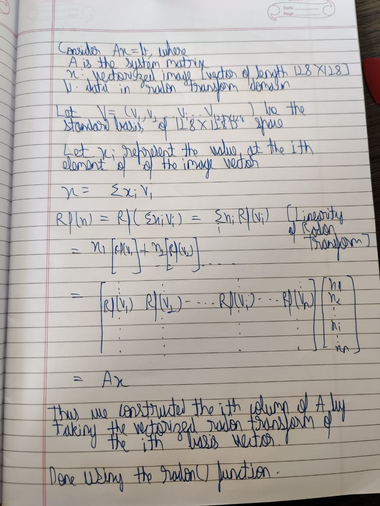
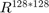
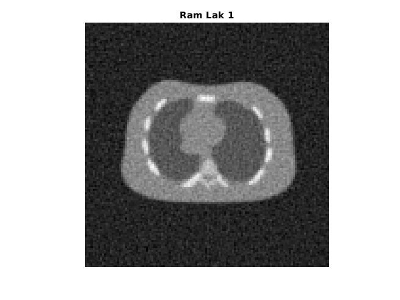

Report Q2
Contents
Init
tic rng(0); phantom = imread("../data/ChestPhantom.png"); phantom = mat2gray(phantom); theta = linspace(0,179,180); [R,xp] = radon(phantom,theta); imshow(phantom); title("Phantom");
Part a
A = system_mat(128, theta); A = sparse(A);

We have used the standard basis for .
Part b
b = A*reshape(phantom,[],1); noisy_b = b + 0.02*range(b)*randn(length(b),1);
Part c
[Ram_Lak_filtered,Shepp_Logan_filtered,Cosine_filtered] = myFilter(reshape(noisy_b,185,180),xp,theta,1); I1 = mat2gray(iradon(Ram_Lak_filtered,theta,'linear','none',128)); I2 = mat2gray(iradon(Shepp_Logan_filtered,theta,'linear','none',128)); I3 = mat2gray(iradon(Cosine_filtered,theta,'linear','none',128)); Rc = zeros(1,3); Rc(1) = RRMSE(phantom,I1); Rc(2) = RRMSE(phantom,I2); Rc(3) = RRMSE(phantom,I3); figure() imshow(I1); title("Ram Lak 1"); figure() imshow(I2); title("Shepp Logan 1"); figure() imshow(I3); title("Cosine 1"); figure() imshow(phantom); title("Original");

RRMSE Values
disp("RRMSE Values:") disp("Ram-Lak: "+ Rc(1)) disp("Shepp-Logan: "+ Rc(2)) disp("Cosine: "+ Rc(3))
RRMSE Values: Ram-Lak: 0.48699 Shepp-Logan: 0.43802 Cosine: 0.33888
Part d
t_opt = 12; x = tikhonov(A,noisy_b,t_opt); img = mat2gray(reshape(x,[],128)); figure() imshow(img) title("Without Prior") phantom = reshape(phantom,[],1); Rd = RRMSE(phantom,x); Rdm = 0.15533; Rdp = 0.15533; %Uncomment the following part to Cross-Check if you want. The may take % upto 1 min extra to run after uncommenting %xm = tikhonov(A,noisy_b,0.8*t_opt); %xp = tikhonov(A,noisy_b,1.2*t_opt); %Rem(1) = RRMSE(phantom,xm); %Rep(1) = RRMSE(phantom,xp);
Tikhonov Regularzation Values
disp("Optimum Parameter Value: " +t_opt) disp("RRMSE at optimum Value: " + Rd) disp("RRMSE at 1.2*opt_value: " + Rdm) disp("RRMSE at 0.8*opt_value: " + Rdp)
Optimum Parameter Value: 12 RRMSE at optimum Value: 0.14619 RRMSE at 1.2*opt_value: 0.15533 RRMSE at 0.8*opt_value: 0.15533
Part e
a_opt = [80 420 700]; g_opt = [1 0.02 0.015]; Re = zeros(1,3); Rem_a = zeros(1,3); Rem_g = zeros(1,3); Rep_a = zeros(1,3); Rep_g = zeros(1,3); x1 = gradient_descent1(A,noisy_b,a_opt(1),g_opt(1),0.01,1e-8,100,1,zeros(128*128,1)); img1 = reshape(x1,[],128); figure() imshow(img1); title("Squared Difference"); x2 = gradient_descent1(A,noisy_b,a_opt(2),g_opt(2),0.01,1e-8,100,2,zeros(128*128,1)); img2 = reshape(x2,[],128); figure() imshow(img2); title("Huber"); x3 = gradient_descent1(A,noisy_b,a_opt(3),g_opt(3),0.01,1e-8,100,3,zeros(128*128,1)); figure() img3 = reshape(x3,[],128); imshow(img3); title("Discontinuity Adaptive"); Re(1) = RRMSE(phantom,x1); Re(2) = RRMSE(phantom,x2); Re(3) = RRMSE(phantom,x3); %hard coding values found because of time-constraint Rem_a(1) = 0.12299; Rem_a(2) = 0.0867; Rem_a(3) = 0.0901; Rem_g(4) = 0.12299; Rem_g(2) = 0.0860; Rem_g(3) = 0.0883; Rep_a(1) = 0.12299; Rep_a(2) = 0.0863; Rep_a(3) = 0.0885; Rep_g(1) = 0.12299; Rep_g(2) = 0.0864; Rep_g(3) = 0.0895;

Huber Function
a | g | rrmse 420 | 0.02 | 0.0846 <---------- 420 | 0.016 | 0.0860 420 | 0.024 | 0.0864 504 | 0.02 | 0.0863 336 | 0.02 | 0.0867
Adaptive function
a | g | rrmse 700 | 0.015 | 0.0884 <--------- 700 | 0.018 | 0.0895 700 | 0.012 | 0.0883 560 | 0.015 | 0.0901 840 | 0.015 | 0.0885
Squarred Error Values
disp("Optimum Parameter Value Sq. Error: a = " + a_opt(1) + ", g = " + g_opt(1)); disp("RRMSE at optimum Values: " + Re(1)) disp("RRMSE at 1.2*a: " + Rem_a(1)) disp("RRMSE at 0.8*a: " + Rep_a(1)) disp("Parameter g : NA")
Optimum Parameter Value Sq. Error: a = 80, g = 1 RRMSE at optimum Values: 0.12221 RRMSE at 1.2*a: 0.12299 RRMSE at 0.8*a: 0.12299 Parameter g : NA
Huber Function Values
disp("Optimum Parameter Value Huber: a = " + a_opt(2) + ", g = " + g_opt(2)); disp("RRMSE at optimum Value: " + Re(2)) disp("RRMSE at 1.2*a: " + Rep_a(2)) disp("RRMSE at 0.8*a: " + Rem_a(2)) disp("RRMSE at 1.2*g: " + Rep_g(2)) disp("RRMSE at 0.8*g: " + Rem_g(2))
Optimum Parameter Value Huber: a = 420, g = 0.02 RRMSE at optimum Value: 0.084596 RRMSE at 1.2*a: 0.0863 RRMSE at 0.8*a: 0.0867 RRMSE at 1.2*g: 0.0864 RRMSE at 0.8*g: 0.086
Discontinuity Adaptive Prior Function
disp("Optimum Parameter Values Disc. adaptive: a = " + a_opt(3) + ", g = " + g_opt(3)); disp("RRMSE at optimum Value: " + Re(3)) disp("RRMSE at 1.2*a: " + Rep_a(3)) disp("RRMSE at 0.8*a: " + Rem_a(3)) disp("RRMSE at 1.2*g: " + Rep_g(3)) disp("RRMSE at 0.8*g: " + Rem_g(3)) toc
Optimum Parameter Values Disc. adaptive: a = 700, g = 0.015 RRMSE at optimum Value: 0.088435 RRMSE at 1.2*a: 0.0885 RRMSE at 0.8*a: 0.0901 RRMSE at 1.2*g: 0.0895 RRMSE at 0.8*g: 0.0883 Elapsed time is 125.121895 seconds.